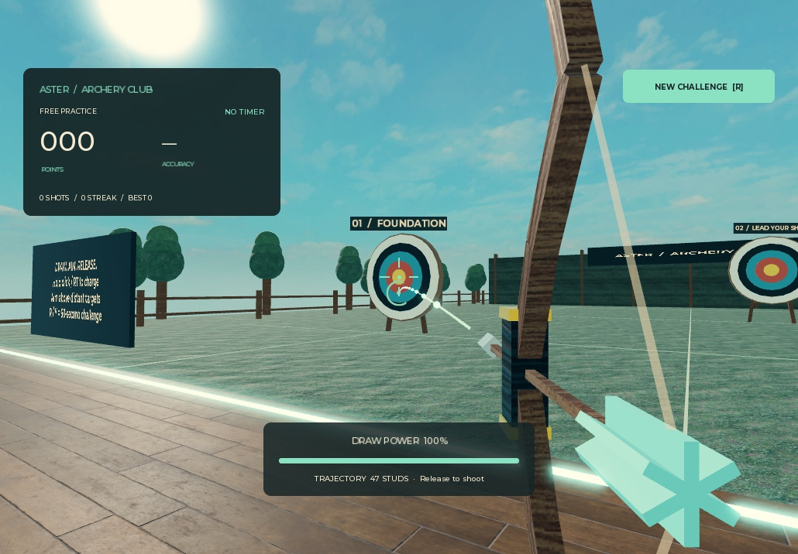

PLAYABLE DEMOEnter the range ↗FEATURED PROJECT / 2026
Aster Archery
Draw the bow, follow the trajectory, and land your shot. Arrows stay where they hit—even on moving targets. Practice freely or start a timed challenge.
LUAU / ROBLOX STUDIO
I’m lordx997. I build Roblox gameplay systems with responsive controls, clear feedback, and logic that lives where it belongs.
A playable demo.
Open code. Real mechanics.
01 / SELECTED WORK
Aster Archery brings a complete bow-and-arrow loop into a focused Roblox practice range.

PLAYABLE DEMOEnter the range ↗FEATURED PROJECT / 2026
Draw the bow, follow the trajectory, and land your shot. Arrows stay where they hit—even on moving targets. Practice freely or start a timed challenge.
Charge power and a curved flight preview make every shot readable before release.
Raycast impacts, target scoring, and attached arrows connect the shot to its result.
A reusable arrow pool, score tracking, and timed challenges support repeat play.
02 / UNDER THE HOOD
A clear division of responsibility keeps the controls responsive and the score tied to validated shots.
Bow controls, trajectory preview, HUD updates, and hit feedback.
Explore client script ↗Charge checks, arrow movement, collision detection, and challenge state.
Explore server script ↗A small detail that matters
-- Return each arrow to the pool only once.
if Self.Released then
return
end
Self.Released = true
Self.Model.Shaft.FlightTrail.Enabled = falseReusing arrow models avoids rebuilding them for every shot. A release guard prevents the same arrow from entering the pool twice.
See the full implementation ↗My focus is Roblox gameplay scripting: connecting the player’s input to systems that feel clear and satisfying to use.
This portfolio starts with Aster Archery. You can try the mechanics in the live experience and inspect the Luau scripts alongside it.